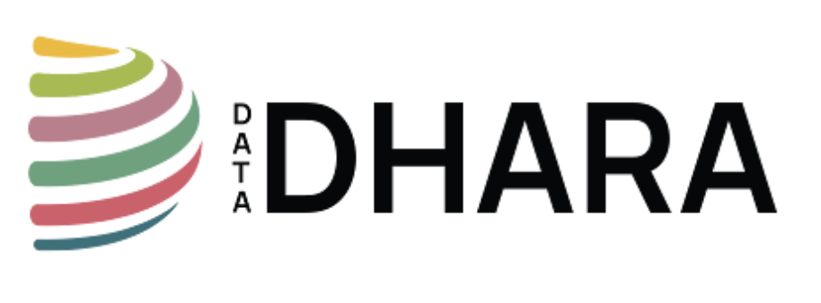

Dhara Desktop
Local data stewardship on this PC — not a website mirror.
AI assist
On 8 GB RAM systems, a small local CPU model is recommended. You can still paste a cloud API key later in Settings.
Close other heavy apps during setup. Docker and WSL will be installed if missing. A reboot may be required once.